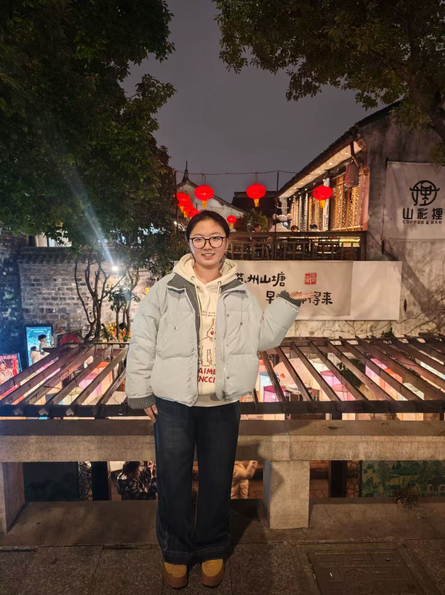
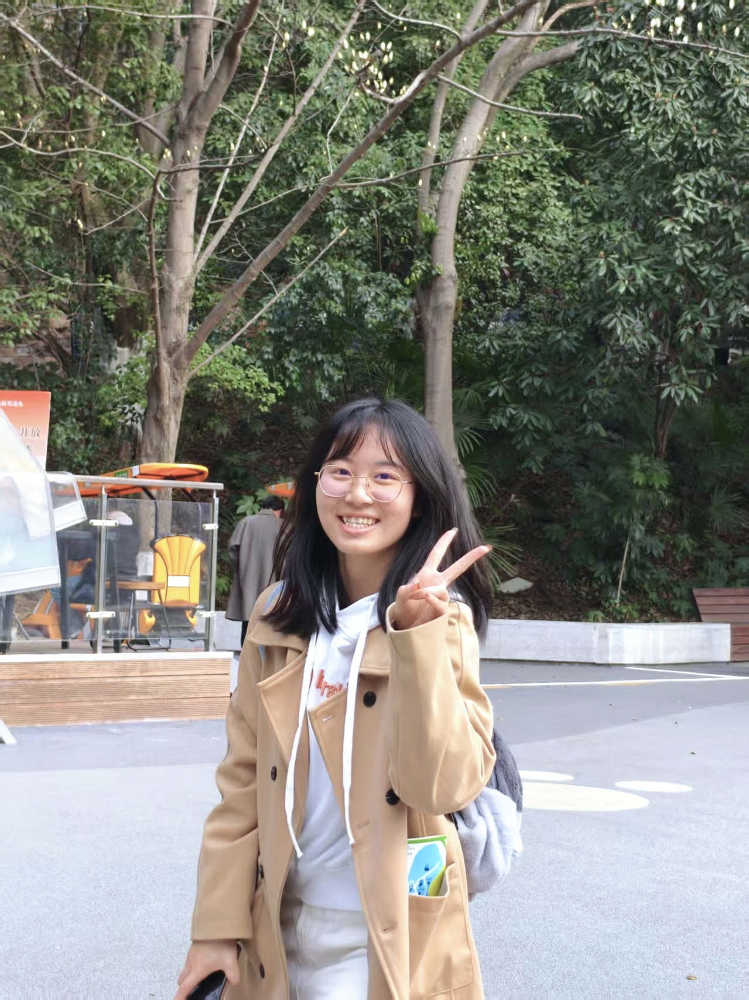
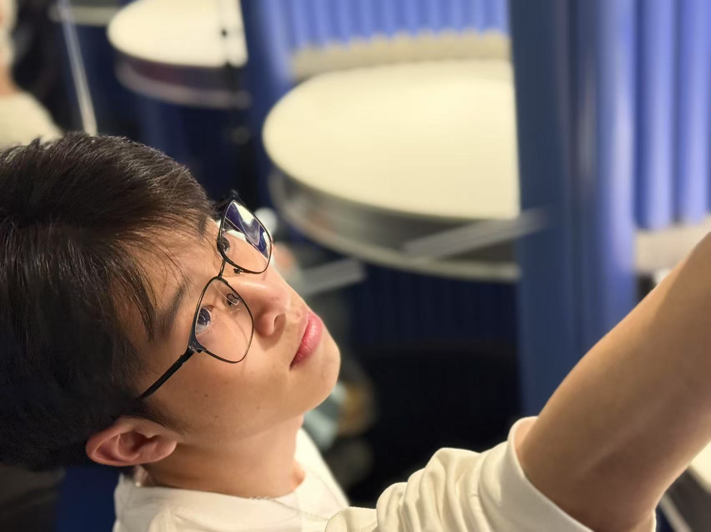
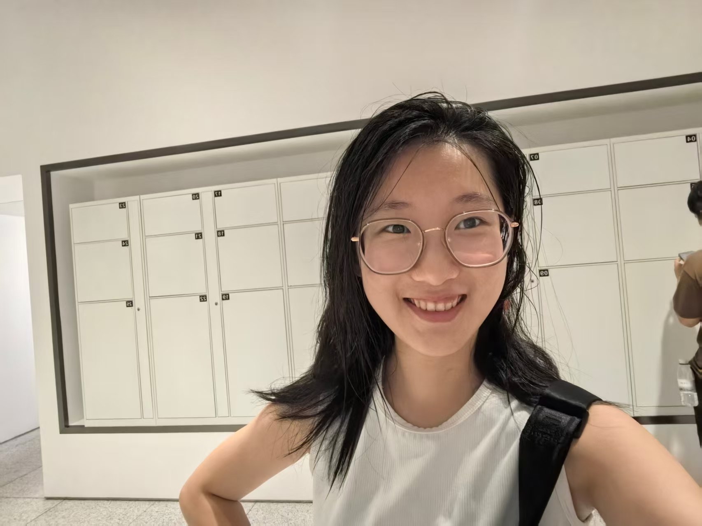

指导教师
季中扬
A Posthuman Turn in Aesthetics in the Age of Artificial Intelligence: From the Disinterested Spectator to the Distributed Aesthetic Subject
继续向下浏览，查看项目团队、研究导览与探索入口。
季中扬
黄小木、唐婉仪、余嘉豪、姚懿珈
学术展示、互动体验、成果传播、答辩辅助
未来感、科技感、学术感、沉浸式、数字美学

汉语言文学专业 承担文献综述撰写、PPT制作等任务

哲学拔尖专业 承担文献综述撰写任务、PPT制作

哲学拔尖专业 承担调查问卷制作、分析报告撰写、PPT制作等任务

哲学拔尖专业 承担网页制作、文献综述撰写、PPT制作等任务
这些区域不是当前阶段必须完成的，但它们是之后继续提升首页完成度时最自然的扩展方向。